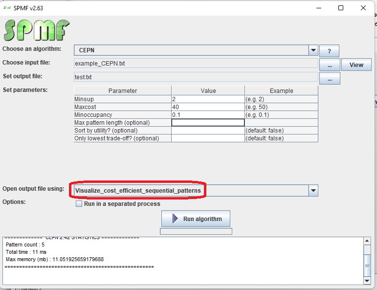
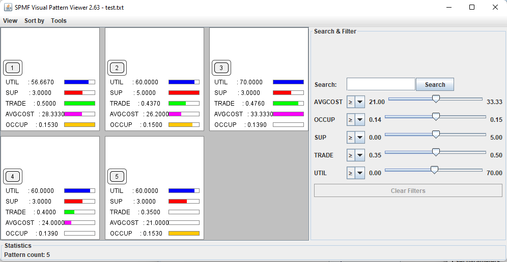

View cost efficient sequential patterns with the Visual Pattern Viewer (SPMF documentation)
Cost efficient sequential patterns are a type of patterns that can be produced by different algorithms offered in SPMF.
This page explains how to visualize the cost efficient sequential patterns found by an algorithm using the Visual Pattern Viewer.
How to run this example?
If you want to run this example using the graphical user interface of SPMF, follow these steps.
1) First, select an cost efficient sequential pattern mining algorithm offered in SPMF. Several algorithms are offered and are described in the documentation of SPMF.
2) Then, in the user interface of SPMF, after selecting an algorithm and setting its input file path, output file path, and parameters, click on the combo-box besides "Open output file using:", and select "Visualize_cost_efficient_sequential_patterns" so that the discovered patterns will be opened with the visual pattern viewer.

3) Then click on "Run algorithm" to run the algorithm.
After the algorithm terminates, the discovered patterns will be displayed using the Visual Pattern Viewer:

The Visual Pattern Viewer interface is quite intuitive. It displays each pattern with its value for each evaluation measure using a colored bar.
The Visual Pattern Viewer offers several features such as:
- Viewing patterns using different layouts (grid, horizontal and vertical layout).
- Sorting patterns by size and measure values.
- Searching and filtering using measure values
- Displaying statistics about the number of patterns found.
Other ways of running the Visual Pattern Viewer
It is also possible to run the Visual Pattern Viewer as an algorithm from the GUI of SPMF..
In this case, in the user interface of SPMF, select "Visualize_cost_efficient_sequential_patterns" as algorithm. Then, select a file containing cost efficient sequential patterns as input file. Then, click "run algorithm".
This will display the patterns from the file using the Visual Pattern Viewer.
Besides, it is also possible to call the Visual Pattern Viewer from the command line interface of SPMF. To open a file called patternsCostEfficientSequentialPatterns1.txt, this syntax can be used:
java -jar spmf.jar run Visualize_cost_efficient_sequential_patterns patternsCostEfficientSequentialPatterns1.txt in a folder containing spmf.jar and the input file.
What is the input file format?
The algorithm takes as input a file containing cost efficient sequential patterns.
The file format is defined as follows. It is a text file, where each line represents a sequential pattern.
The format is explained with an example pattern file:
@FILETYPE="Cost-efficient Sequential patterns"
@SOURCE="SPMF SOFTWARE https://philippe-fournier-viger.com/spmf/"
1 -1 -2 #UTIL: 56.667 #SUP: 3 #TRADE: 0.500 #AVGCOST: 28.333 #OCCUP: 0.153
2 -1 -2 #UTIL: 60.000 #SUP: 5 #TRADE: 0.437 #AVGCOST: 26.200 #OCCUP: 0.150
5 -1 -2 #UTIL: 60.000 #SUP: 3 #TRADE: 0.350 #AVGCOST: 21.000 #OCCUP: 0.153
3 -1 -2 #UTIL: 70.000 #SUP: 3 #TRADE: 0.476 #AVGCOST: 33.333 #OCCUP: 0.139
4 -1 -2 #UTIL: 60.000 #SUP: 3 #TRADE: 0.400 #AVGCOST: 24.000 #OCCUP: 0.139
2 -1 5 -1 -2 #UTIL: 65.000 #SUP: 2 #TRADE: 0.723 #AVGCOST: 47.000 #OCCUP: 0.583
The first two lines are metadata indicating the type of patterns in this file and the source of the data. Then the following lines provide the list of patterns. Consider the line:
2 -1 5 -1 -2 #UTIL: 65.000 #SUP: 2 #TRADE: 0.723 #AVGCOST: 47.000 #OCCUP: 0.583
This line is the pattern where event "2" is followed by event "5". On that line, there is #SUP:2, which indicates that the support (occurrence frequency) of this pattern is 2, and AVGCOST: 47.000 indicating that the pattern's average cost is 47. Moreover, #UTIL: 65.000 indicates that this pattern has an average utility of 65, and #TRADE: 0.723 indicates that this pattern has a trade-off ratio between cost and utility of 0.723. The other lines follow the same format.